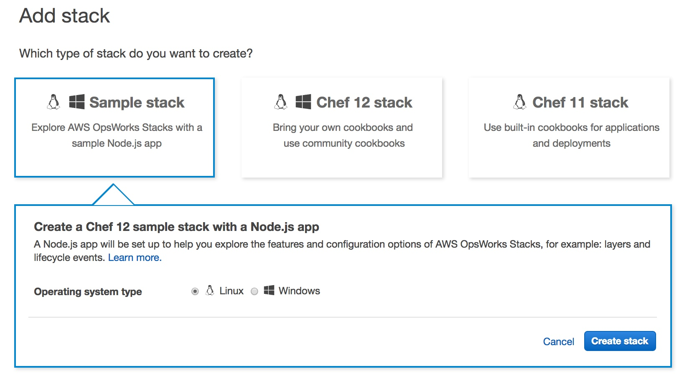

            <div class="main-body-div" id="main-box">
            <div class="container-fluid">
                <div class="row">
                    <div class="col-lg-12 col-xs-12">
                <!-- Main Body Content -->
                    <h2 class="page-title bg-primary">OpsWorks: About</h2>


                 <div class="inner-body panel">
                    <h4 class="sub-heading">About OpsWorks</h4>
                    <div class="inner-body panel">
                        <p>"AWS OpsWorks is a configuration management service that helps you configure and operate applications of all shapes and sizes using Chef. You can define the application’s architecture and the specification of each component including package installation, software configuration and resources such as storage. Start from templates for common technologies like application servers and databases or build your own to perform any task that can be scripted. AWS OpsWorks includes automation to scale your application based on time or load and dynamic configuration to orchestrate changes as your environment scales." </p>
                        <p>OpsWorks provides a structured way to automate the operations of your AWS infrastructure and deployments with lifecycle events and the Chef configuration management tool. OpsWorks provides more flexibility than Elastic Beanstalk and more structure and constraints than CloudFormation. There are several key constructs that compose OpsWorks. They are:</p>

                        <ul class="edited-ul">
                            <li><strong>Stack</strong> – An OpsWorks stack is the logical container defining OpsWorks layers, instances, apps and deployments.</li>
                            <li><strong>Layer</strong> – There are built-in layers provided by OpsWorks such as Static Web Servers, Rails, Node.js, etc. But, you can also define your own custom layers as well.</li>
                            <li><strong>Instances</strong> – These are EC2 instances on which the OpsWorks agent has been installed. There are only certain Linux and Windows operating systems supported by OpsWorks instances.</li>
                            <li><strong>App</strong> – "Each application is represented by an app, which specifies the application type and contains the information that is needed to deploy the application from the repository to your instances." [2].</li>
                            <li><strong>Deployment</strong> – Runs Chef recipes to deploy the application onto instances based on the defined layer in the stack.</li>
                        </ul>

                        <p>There are also lifecycle events that get executed for each deployment. Lifecycle events are linked to one or more Chef recipes. The five lifecycle events are setup, configure, deploy, undeploy, shutdown. Events get triggered based upon certain conditions. Some events can be triggered multiple times. They are described in more detail below:</p>

                        <ul class="edited-ul">
                            <li><strong>setup</strong> – When an instance finishes booting as part of the initial setup.</li>
                            <li><strong>configure</strong> – When this event is run, it executes on all instances in all layers whenever a new instance comes in service, or an EIP changes, or an ELB is attached.</li>
                            <li><strong>deploy</strong> – When running a deployment on an instance, this event is run.</li>
                            <li><strong>undeploy</strong> – When an app gets deleted, this event is run.</li>
                            <li><strong>shutdown</strong> – Before an instance is terminated, this event is run-</p>.</li>
                        </ul>
                    </div>  
                 </div> 


                    <div class="inner-body panel">
                        <h4 class="sub-heading">Launch a Sample OpsWorks</h4>
                                <ul class="ul-listed">
                                   <li>Go to OpsWorks and select Sample Stack and perform the walktrhough</li>
                                   <!-- code block -->
                                    <figure class="highlight">
                                        
                                    </figure>
                                    <!--code block ends here-->
                                   
                                </ul>                   
                    </div>  


                    <div class="inner-body panel">
                        <h4 class="sub-heading">Other Notes</h4>
                        <p>Below, I’ve documented some additional information that might be useful on the OpsWorks service itself including its available integrations, supported versions and features.</p>
                        <ul class="edited-ul">
                            <li>OpsWorks supports three application source types: GitHub, S3, and HTTP.</li>
                            <li>You can store up to five versions of an OpsWorks application: the current revision plus four more for rollbacks.</li>
                            <li>When using the create-deployment method, you can target the OpsWorks stack, app, or instance.</li>
                            <li>OpsWorks require internet access for the OpsWorks endpoint instance.</li>
                            <li>Chef supports Windows in version 12.</li>
                            <li>You cannot mix Windows and Linux instances in an OpsWorks stack.</li>
                            <li>To change the default OS in OpsWorks, you need to change the OS and reprovision the instances.</li>
                            <li>You cannot change the VPC for an OpsWorks instance.</li>
                            <li>You can add ELB, EIPs, Volumes and RDS to an OpsWorks stack.</li>
                            <li>OpsWorks autoheals at the layer level.</li>
                            <li>You can assign multiple Chef recipes to an OpsWorks layer event.</li>
                            <li>The three instance types in OpsWorks are: 24/7, time-based, load-based.</li>
                            <li>To initiate a rollback in OpsWorks, you use create-deployment command.</li>
                            <li>The following commands are available when using OpsWorks create-deployment along with possible use cases:.</li>
                            <li>install_dependencies.</li>
                            <li>update_dependencies – Patches to the Operating System. Not available after Chef 12..</li>
                            <li>update_custom_cookbooks – pulling down changes in your Chef cookbooks.</li>
                            <li>execute_recipes – manually run specific Chef recipes that are defined in your layers.</li>
                            <li>configure – service discovery or whenever endpoints change.</li>
                            <li>setup.</li>
                            <li>deploy.</li>
                            <li>rollback.</li>
                            <li>start.</li>
                            <li>stop.</li>
                            <li>restart.</li>
                            <li>undeploy.</li>
                            <li>To enable the use of multiple custom cookbook repositories in OpsWorks, you can enable custom cookbook at the stack and then create a cookbook that has a Berkshelf file with multiple sources. Before Chef 11.10, you couldn’t use multiple cookbook repositories.</li>
                            <li>You can define Chef databags in OpsWorks Users, Stacks, Layers, Apps and Instances.</li>
                            <li>OpsWorks Auto Healing is triggered when an OpsWorks Agent detects loss of communication and stops, then restarts the instances. If it fails, it goes into manual intervention.</li>
                            <li>OpsWorks will not auto heal an upgrade to the OS.</li>
                            <li>OpsWorks does not auto heal by monitoring performance, only failures..</li>
                        </ul>                  
                    </div>   


                 
